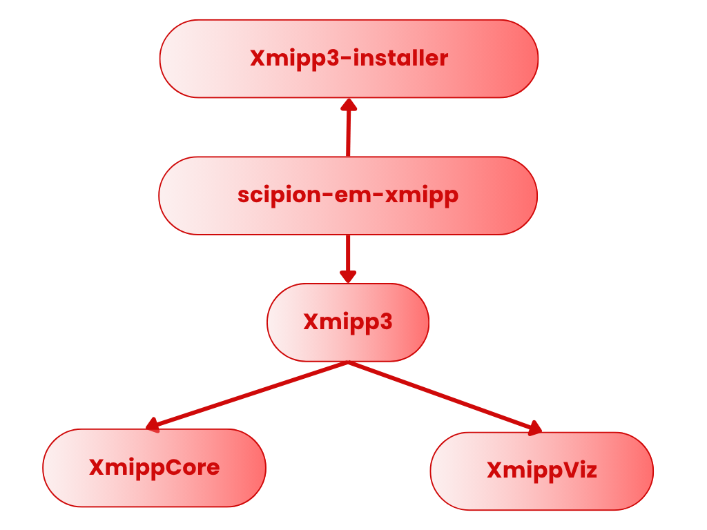

Xmipp Release Procedures
This document describes how to manage versions following semantic version standar , and releases for the different components of the Xmipp ecosystem: xmipp3-installer, scipion-em-xmipp, xmipp3, xmippCore and xmippViz.
{kind=link}

Fig. 1 Repositories dependencies
Repository |
Steps to Create a New Version |
|---|---|
xmipp3-installer |
|
scipion-em-xmipp |
|
xmipp3 |
|
xmippCore |
|
xmippViz |
|
xmipp3-installer 🗃️
xmipp3-installer packages the Xmipp binaries and is published on PyPI. It is automatically installed by the Scipion plugin scipion-em-xmipp.
Release Generation
Releases are produced via the GitHub manual action Generate release (Pypi, tag, & GitHub Release). Executing this action will upload a new version to PyPI and create the corresponding Git tag and GitHub Release.
Installation Through Scipion
The scipion-em-xmipp plugin installs it using its requirements.txt:
xmipp3-installer==1.*
scipion-em-xmipp 🗃️
This is the Scipion plugin that integrates Xmipp into Scipion.
Steps to Create a New Release
Update the changelog
Edit
changelog.mdwith the new version and a list of changes.Update the version
Modify the
__version__variable in:scipion-em-xmipp/xmipp3/version.py
Run the GitHub Release action
Trigger the manual action
Release. This will upload the new version to PyPI and create a new Git tag and GitHub Release.
Major Xmipp Version Changes
If the major version of Xmipp changes, update these fields:
scipion-em-xmipp/xmipp3/version.py
_binVersion
_binTagVersion
xmipp3 🗃️
Top-level Xmipp distribution, bundling submodules such as xmippCore and xmippViz.
Version Updates
Edit the version information in:
xmipp/version-info.json
The fields to modify are:
version_numberversion_name: only when the major version changes. Use the Protein cataloge for Xmipp releases namerelease_date
If xmippCore or xmippViz increase their major version, update their
version references inside version-info.json.
Release Procedure
Update
changelog.mdwith the new version and changes.Trigger the GitHub manual action
Releaseto Create a new Git tag and Publish a GitHub Release
xmippCore 🗃️
Core Xmipp libraries and algorithms.
Steps to Create a New Release
Add a new section in
changeLOG.mdincluding Version number and Description of changesTrigger the
ReleaseGitHub manual action to generate a new Git tag
xmippViz 🗃️
Visualization module for Xmipp and Scipion
Steps to Create a New Release
Add the new version and changes to
changeLOG.mdincluding Version number and Description of changesExecute the GitHub manual action
Releaseto create the new tag
🧬 Protein Catalog for Xmipp releases naming 🧬
A
Actin – Cell structure and movement
Apoferritin – Iron storage scaffold protein
ATP synthase – Produces ATP from ADP
B
Bacteriorhodopsin – Light-driven proton pump
Beta-tubulin – Microtubule structural protein
Biotin carboxylase – Catalyzes carboxylation reactions
C
Cas9 – DNA cutting enzyme
CFTR – Chloride ion channel
Clathrin – Vesicle formation protein
D
Dynein – Moves cargo along microtubules
DNA polymerase – DNA replication enzyme
Dicer – Processes microRNA precursors
E
Elastin – Provides tissue elasticity
Electron transfer flavoprotein – Transfers electrons in mitochondria
Elongation factor 2 – Assists protein translation
F
Ferritin – Iron storage protein
Fibrinogen – Blood clot formation
Flagellin – Builds bacterial flagella
G
GAPDH – Glycolysis enzyme
GroEL – Protein folding chaperone
GPCR – Signal reception and transduction
H
Hemoglobin – Oxygen transport
Histone – DNA packaging protein
Hsp90 – Protein folding chaperone
I
Integrin – Cell adhesion receptor
Immunoglobulin G – Antibody immune defense
Ion channel TRPV1 – Heat/pain sensor channel
K
Keratin – Structural hair/nail protein
Kinesin – Microtubule cargo transport
Kinase (PKA) – Phosphorylates target proteins
L
Lactate dehydrogenase – Converts lactate to pyruvate
Laminin – Extracellular matrix structural protein
Lipase – Breaks down fats
M
Myosin – Motor protein for movement
Myoglobin – Oxygen storage in muscles
Mitochondrial complex I – Electron transport in mitochondria
N
NADH dehydrogenase – Oxidizes NADH in mitochondria
Na⁺/K⁺-ATPase – Maintains ion gradients
Nucleosome – DNA wound around histones
O
Opsin – Light-detecting protein
Outer membrane porin – Small molecule transport
Oxytocin – Hormone, induces contractions
P
p53 – Tumor suppressor
Photosystem II – Splits water in photosynthesis
Proteasome – Degrades unwanted proteins
R
Ribosome – Protein synthesis machine
RNA polymerase II – Transcribes mRNA
Rubisco – Fixes carbon dioxide
S
Spike (SARS-CoV-2) – Virus entry protein
Sec61 translocon – Inserts proteins into ER
Synapsin – Regulates neurotransmitter release
T
Tubulin – Microtubule building block
Troponin – Regulates muscle contraction
TRPV1 – Heat/pain sensory channel
U
Ubiquitin – Marks proteins for degradation
Urease – Breaks down urea
Uncoupling protein – Dissipates mitochondrial proton gradient
V
V-ATPase – Acidifies organelles
Vinculin – Connects cytoskeleton to membrane
Voltage-gated sodium channel – Action potential initiation
W
Wnt protein – Cell signaling and development
Wee1 kinase – Controls cell cycle
Wilms tumor protein (WT1) – Kidney development regulator
Y
YAP – Transcription coactivator, growth
Y-box binding protein – Regulates transcription and translation
Z
Zinc finger protein – DNA binding protein
ZO-1 – Tight junction scaffolding